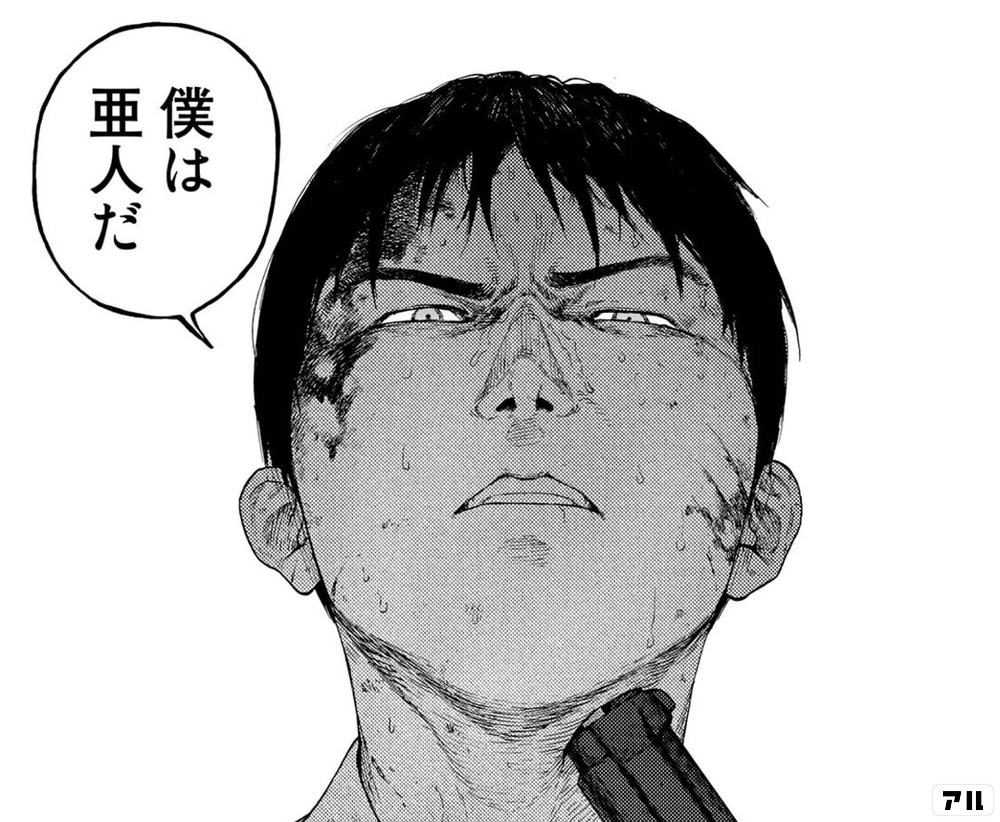

-
永井圭
- 
進学校に通う高校3年生。
下校時に交通事故にあい、国内３例目の亜人であることが発覚。
警察はもとより、懸賞金や名声を求める人々からも追われる身となる。
-
永井慧理子
永井圭の妹。
幼いころから病弱で、何度も入退院を繰り返している。
兄に対しては、あまり良い感情を持っていないようだ。
-
永井律
圭と慧理子の母。
冷酷ではないが、医者になることを表明した圭に悪影響を与えるという理由から犯罪者の息子である海斗から遠ざけるなど、冷静かつ合理的な性格。
圭から電話がかかってきた際は、何があっても生き残れと檄を送った。
-
海斗
圭の幼少期からの友人。
圭が亜人であるということが発覚した時も変わらず接した唯一の人物。
現在は亜人の逃亡を幇助した罪により服役中で、少年院で亜人の琴吹武と出会う。
-
田中
日本国内で2例目に確認された亜人。
捕獲された後は、国から10年にもおよぶ非人道的な虐待実験を受けたため、人間に対し激しい憎悪の感情を抱いているが、佐藤と違い根からの悪人ではなく、元は普通の若者。
研究機関から佐藤により救い出され、以後行動を共にする。
-
佐藤
亜人でテロリスト。
佐藤と名乗っているが、本名はサミュエル・T・オーウェン。
麻酔弾の命中した腕を即座に切り落とすなど、亜人であることを最大限に生かした戦闘を行い、黒い幽霊を使わずとも非常に高い戦闘能力（戦闘機を操縦する技能も）を有している。
-
秋山礼二
佐藤が集めた7人の亜人の1人、高知市の消防局に勤務している。
常人なら72時間で廃人と化すドラム缶の中に5週間監禁されながら精神を保ち続けた。
最終ウェーブを開始した佐藤達を阻止するため圭側の仲間になる。
-
戸崎優
厚生労働省から派遣された亜人担当の職員。
名字の読み方は「トサキ」で「トザキ」と読みを間違えたときは「トサキです」といちいち指摘する。
佐藤の暗躍を止めるべくさまざまな策を講じ、亜人への残虐な虐待を見ても顔色ひとつ変えない残忍な性格。
-
下村泉
厚生労働省で戸崎の部下として動いている女性。
正体は「亜人」であるが、戸崎の活動に協力することにより、その庇護を受け世間に正体を公表されることなく過ごせている。
IBMを操ることができ、本人はこれを「クロちゃん」と呼んでいる。
-
高橋
アロハシャツに短パン姿の男性。
佐藤が集めた7人の亜人の1人、狙撃が得意で銃の扱いに慣れている。
戦闘時には覚醒剤らしきものを使っている。
-
琴吹武
少年院にいた亜人。
誰かに恩を仇で返され服役しているためか、性格は少々捻くれている。
しかし少年院の中でいざこざに巻き込まれた自分を身を挺して守ってくれた海斗に対しては心を開いている。
-
奥山
佐藤が集めた7人の亜人の1人、佐藤たちと行動を共にする。
生まれつき右足の筋肉が弱く不自由で、復活後も右足は不自由なままで歩行には杖を使用している。
機械に強く、ドローンやハッキングを使って佐藤たちをサポートしている。
-
オグラ・イクヤ
生物物理学者。無精髭を生やし、飄々とした風貌の男。
豪胆かつ厭世的な性格の持ち主であり、我が身を省みない大胆さを以って亜人についてかなりの研究を進めている亜人研究の第一人者。
殺気を放つIBMを目の前にしても全く恐怖を感じない変わり者。
-
対亜人特選軍
対亜人用に編成された陸上自衛隊の特殊部隊。略称「対亜」(たいあ)。存在自体が違法の部隊であるという。
部隊員は5名のみで構成されており、隊員のコードネームは山荒・北狐・蝦夷鹿・穴熊といった動物の名称を使用している。